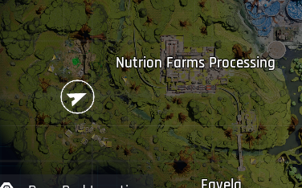
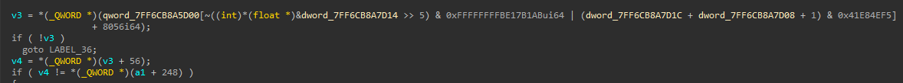
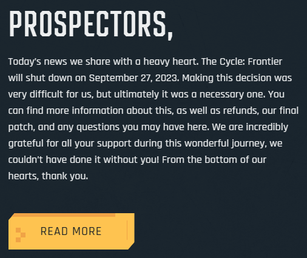

The Cycle: Frontier - What went wrong
The ability to teleport turning into the ability to fly⌗
Before getting patched you used to be able to teleport by writing your location to a desired location while climbing up a ledge, the developers ended up patching this but in the process to made it so if you were to write CharacterMovement::EMovementMode while climbing up a ledge you would be able to use the flying movement mode, and to restore it back while climbing a ledge again your movement mode would be back to normal again.
enum class EMovementMode : uint8
{
MOVE_None = 0,
MOVE_Walking = 1,
MOVE_NavWalking = 2,
MOVE_Falling = 3,
MOVE_Swimming = 4,
MOVE_Flying = 5,
MOVE_Custom = 6,
MOVE_MAX = 7,
};
Flying was abused on the second map to fly into the EXIT of the main boss room, the room was designed for you to fight a boss and get into a loot room with the best gear in the game, and then go through a one-way exit, but being able to fly means you go fly into the exit.

Removing engine strings⌗
An attempt to stop cheaters from finding offsets required to get the necessary information to create wallhack\aimbot\recoil\stamina\etc was to remove Unreal Engine 4 strings people would search for in programs such as IDA pro to XRef them and get the offsets that were referenced near the string, this resulted in most people using ReClass.Net to manually find these offsets by using predictable data in the class.
UWorld “Obscuring”⌗
Another attempt at stopping cheaters the developers implemented was to obscure the UWorld pointer, but this is pretty simple to resolve.

int offset1 = ~((int)memory.read<float>(mod.base + offsets::offset1) >> 5);
uint64_t offset2 = memory.read<uint64_t>(mod.base + offsets::offset2);
uint64_t offset3 = memory.read<uint64_t>(mod.base + offsets::offset3);
uint64_t index = (offset1 & 0xFFFFFFFFBE17B1AB) | (offset2 + offset3 + 1) & 0x41E84EF5;
uint64_t uworld = memory.read<uint64_t>((mod.base + offsets::uworld) + (8 * index));
Randomizing class padding ALMOST daily⌗
ANOTHER attempt to stop cheaters was to randomly add padding of random sizes to classes inside the engine, this was also defeated by people using ReClass.Net and meant that players had to download a 100MB update almost daily, this alone isn’t too much of a problem but it becomes more of a problem when after steam downloaded the update it had to patch 40GB of files, this made installing required updates much slower.
This also meant that commonly used Unreal Engine 4 dumpers became pretty much useless because the padding changed so often it wouldn’t be worth updating the offsets for the dumper in the first place.
Statement regarding shutting down⌗
